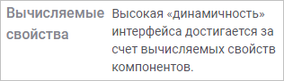

Свойства компонента интерфейса, унаследованного от компонента «КомпонентСЗаголовком»
«1С:Кабинет сотрудника» показывает содержимое этого компонента (это может быть экземпляр любого компонента) рядом с заголовком.

Иерархия наследования
- Компонент (абстрактный)
Свойства
- Заголовок
- Текст заголовка
- ПоложениеЗаголовка
- Положение заголовка относительно компонента: Верх, Лево, Право, Низ
- Содержимое
- Экземпляр компонента, расположенный в данном компоненте. Содержит следующие свойства:
- Тип
- Обязательное. Имя компонента, экземпляр которого вы описываете. Это может быть системный
компонент или компонент интерфейса. Пример
YAML-файла:
ВидЭлемента: КомпонентИнтерфейса Ид: 9f51db7f-c98d-499c-9607-545d5e0a58c2 Имя: МояФормаОбъекта Наследует: Тип: ФормаОбъекта ВключатьВАвтоИнтерфейс: Ложь Содержимое: Тип: ОбычнаяГруппа Содержимое: - Тип: Флажок Имя: ЗагружатьВсе Заголовок: Загружать все данные Значение: Тип: Булево Значение: Истина - Тип: Флажок Имя: ПерезаписыватьСтарые Заголовок: Перезаписывать старые элементы - Имя
- Имя экземпляра компонента. По этому имени можно будет обратиться к экземпляру. Пример
YAML-файла:
Например, к его свойству Видимость:ВидЭлемента: КомпонентИнтерфейса Ид: 9f51db7f-c98d-499c-9607-545d5e0a58c2 Имя: МояФормаОбъекта Наследует: Тип: ФормаОбъекта ВключатьВАвтоИнтерфейс: Ложь Содержимое: Тип: ОбычнаяГруппа Имя: Флажки Содержимое: - Тип: Флажок Имя: ЗагружатьВсе Заголовок: Загружать все данные Значение: Тип: Булево Значение: Истина - Тип: Флажок Имя: ПерезаписыватьСтарые Заголовок: Перезаписывать старые элементыВидЭлемента: КомпонентИнтерфейса Ид: 9f51db7f-c98d-499c-9607-545d5e0a58c2 Имя: МояФормаОбъекта Наследует: Тип: ФормаОбъекта ВключатьВАвтоИнтерфейс: Ложь Видимость: =Компоненты.Флажки.Видимость Содержимое: Тип: ОбычнаяГруппа Имя: Флажки Содержимое: - Тип: Флажок Имя: ЗагружатьВсе Заголовок: Загружать все данные Значение: Тип: Булево Значение: Истина - Тип: Флажок Имя: ПерезаписыватьСтарые Заголовок: Перезаписывать старые элементы - ОтслеживатьИзменениеДанных
- Не обязательное. По умолчанию Ложь. Если Истина, то «1С:Кабинет сотрудника» будет учитывать изменение данных в этом экземпляре при вычислении свойства РассчитаннаяМодифицированность у экземпляра этого компонента интерфейса. Пример YAML-файла:
ВидЭлемента: КомпонентИнтерфейса Ид: 9f51db7f-c98d-499c-9607-545d5e0a58c2 Имя: МояФормаОбъекта Наследует: Тип: ФормаОбъекта ВключатьВАвтоИнтерфейс: Ложь Содержимое: Тип: ОбычнаяГруппа ОтслеживатьИзменениеДанных: Истина Содержимое: - Тип: Флажок Имя: ЗагружатьВсе Заголовок: Загружать все данные Значение: Тип: Булево Значение: Истина - Тип: Флажок Имя: ПерезаписыватьСтарые Заголовок: Перезаписывать старые элементы - <Свойство компонента>
- Значение свойства компонента в этом экземпляре. Если тип свойства составной (включает несколько типов), необходимо указать тип
значения. Иначе просто само значение. Пример YAML-файла:
ВидЭлемента: КомпонентИнтерфейса Ид: 9f51db7f-c98d-499c-9607-545d5e0a58c2 Имя: МояФормаОбъекта Наследует: Тип: ФормаОбъекта ВключатьВАвтоИнтерфейс: Ложь Содержимое: Тип: ОбычнаяГруппа Ориентация: Горизонтальная Содержимое: - Тип: Флажок Имя: ЗагружатьВсе Заголовок: Загружать все данные Значение: Тип: Булево Значение: Истина - Тип: Флажок Имя: ПерезаписыватьСтарые Заголовок: Перезаписывать старые элементы - <Событие компонента>
- Имя метода, обрабатывающего событие компонента в этом экземпляре. Метод должен находиться в модуле компонента. Пример
YAML-файла:
ВидЭлемента: КомпонентИнтерфейса Ид: 9f51db7f-c98d-499c-9607-545d5e0a58c2 Имя: МояФормаОбъекта Наследует: Тип: ФормаОбъекта ВключатьВАвтоИнтерфейс: Ложь Содержимое: Тип: ОбычнаяГруппа ПослеСоздания: ОбработчикПослеСозданияГруппы Содержимое: - Тип: Флажок Имя: ЗагружатьВсе Заголовок: Загружать все данные Значение: Тип: Булево Значение: Истина - Тип: Флажок Имя: ПерезаписыватьСтарые Заголовок: Перезаписывать старые элементы
- СтилиОформления
- Массив стилей оформления компонента. «1С:Кабинет сотрудника» применяет эти стили в порядке их перечисления
- ЦветТекстаЗаголовка
- Цвет текста заголовка